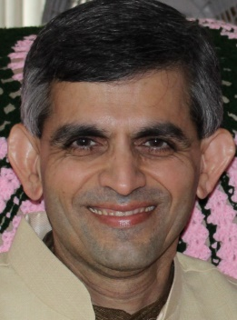
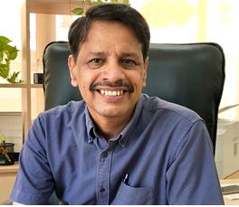

Xavier Fernando is a Professor at the Dept. of Electrical and Computer Engineering, Ryerson University, Toronto, Canada. He has (co-)authored over 200 research articles, two books (one translated to Mandarin) and holds few patents and non-disclosure agreements. He is the Director of Ryerson Communications Lab (www.ee.ryerson.ca/rcl) that has received total research funding of $3,185,000.00 since 2008 from industry and government (including joint grants. Information about the alumni of this lab is available here.He was an IEEE Communications Society Distinguished Lecturer and delivered close over 50 invited talks and keynote presentations all over the world. He was a member in the IEEE Communications Society (COMSOC) Education Board Working Group on Wireless Communications. He was the Chair IEEE Canada Humanitarian Initiatives Committee 2017-18. He was also the Chair of the IEEE Toronto Section and IEEE Canada Central Area. He was the General Chair for IEEE International Humanitarian Technology Conference (IHTC) 2017 and the General Chair of IEEE Canadian Conference on Electrical and Computer Engineering (CCECE), 2014. He has been in the organizing/steering/technical program committees of numerous conferences and journals. He was a Member of Board of Governors of Ryerson University during 2011-12.He is a program evaluator for ABET (USA). He was a visiting scholar at the Institute of Advanced Telecommunications (IAT), UK in 2008 and MAPNET Fellow visiting Aston University, UK in 2014. Ryerson University nominated him for the Top 25 Canadian Immigrants award in 2012 in which was a finalist.

Dr. Farookh Hussain is a Professor in School of Computer Science, University of Technology, Sydney- Australia and is currently serving as an Head of Software Engineering. Dr. Farookh Hussain is an Associate member of Advanced Analytics Institute and Core-Member of Australian Artificial Intelligence Institute. He has written various books and book chapters to his accounts, to name a few: Measuring and Analysing the Use of Ontologies: A Semantic Framework for Measuring Ontology Usage, Risk Assessment and Management in the Networked Economy and Trust and Reputation for Service-Oriented Environments: Technologies for Building Business Intelligence and Consumer Confidence. His research interests are in the fields of Block Chain, Machine Learning, Trust Based Computing, Service Oriented Computing and Cloud of Things. He has published widely in these areas in top journals, such as FGCS, the Computer Journal, JCSS, the IEEE Transactions on Industrial Informatics, and the IEEE Transactions on Industrial Electronics. He has published around 500+ papers in various International Journal and Conferences. He had completed around 50+ funded projects for the government and various private organisations.
Rajeev R. Raje is a Professor in the Department of Computer and Information Science (CIS) and is currently serving as an Associate Dean in the School of Science at Indiana University-Purdue University Indianapolis (IUPUI). Dr. Raje's research interests are in the fields of distributed and service-oriented software systems, programming languages, and software engineering. Dr. Raje is an author/co-author of more than 145 publications. His current and past research has been supported by various federal and private organizations – total support (as a PI or Co-PI) for his research efforts is worth more than 6.5 M$. Dr. Raje is a Senior Member of the ACM and IEEE and co-directs the software engineering and distributed systems (SEDS) group in the CIS department. He is also a recipient of a few awards including the J. N. Tata Endowment Scholarship, and different Research, Service, and Teaching honors.
Rajeev R. Raje is a Professor in the Department of Computer and Information Science (CIS) and is currently serving as an Associate Dean in the School of Science at Indiana University-Purdue University Indianapolis (IUPUI). Dr. Raje's research interests are in the fields of distributed and service-oriented software systems, programming languages, and software engineering. Dr. Raje is an author/co-author of more than 145 publications. His current and past research has been supported by various federal and private organizations – total support (as a PI or Co-PI) for his research efforts is worth more than 6.5 M$. Dr. Raje is a Senior Member of the ACM and IEEE and co-directs the software engineering and distributed systems (SEDS) group in the CIS department. He is also a recipient of a few awards including the J. N. Tata Endowment Scholarship, and different Research, Service, and Teaching honors.

Dr. Prahlad VADAKKEPAT, an Associate Professor at the National University of Singapore is the founder secretary of the Federation of International Robot-soccer Association and was its General Secretary during 2000-16. DR. VADAKKEPAT’s contributions in FIRA has led to several start-ups in robotics and embedded systems. He chaired the Futurescape 2025 panel on “I, Robot” by A*STAR Singapore. He is a nominated member of the Loka Kerala Sabha (World Kerala Assembly) initiated by Govt. of Kerala, India. He is one of the resource persons in the Igniting Minds movement by Vijyana Bharathi India (VIBHA) which is a programme enabling students to shed conventions and think out of the box. He has produced a full length feature film in Malayalam language which has received accolades at international film festivals. DR. VADAKKEPAT is the Editor-In-Chief for the Springer Reference Book on Humanoid Robotics. He is an associate editor of the International Journal of Humanoid Robotics. He is an associate editor of the International Journal of Humanoid Robotics. He was the general chair to the FIRA Robot World Cup & Congress Singapore 2005, General Program Chair to FIRA Robot World Congress Incheon 2009 and General Chair to FIRA Robot World Cup & Congress Bangalore 2010. His Humanoid robots and robot soccer teams have consistently won several international prizes: First prize and overall championship in Humanoid robot soccer at the FIRA Robot World Cup (Germany 2006, Singapore 2005 and Austria 2003), First Prize (open category) in Singapore Robotic Games (2004) and Second prize in FIRA 2004. He was the founder director to an entrepreneurial start-up “Robhatah Robotic Solutions” at Singapore and Bangalore.